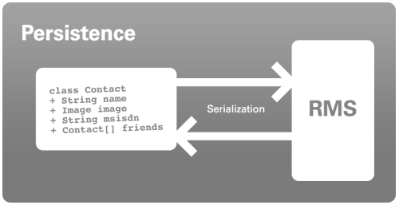

Based on of J2ME Polish' serialization framework, the persistence framework allows you to store data easily on the handset.

Use the RmsStorage to read and save data to the record store in the easiest possible way!
import de.enough.polish.io.RmsStorage;
import java.io.IOException;
public class AddressBook {
Vector contacts;
RmsStorage storage;
public AddressBook() {
this.storage = new RmsStorage();
try {
this.contacts =
(Vector) this.storage.read( "AddressBook" );
} catch (IOException e) {
// no address book has been saved before, so create new one:
this.contacts = new Vector();
}
public void save() throws IOException {
this.storage.save( this.contacts, "AddressBook" );
}
}
}
Please refer to the "serialization" sample application in ${polish.home}/samples/serialization for the full example how to use these concepts.
<%include end.txt %>